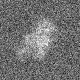
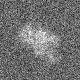
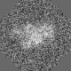
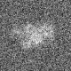

最小
最大
平均値
標準偏差
標準誤差
-64.5759
93.0617
5.50826
20.7262
0.259078
| オプション | 必須項目/選択項目 | 説明 | デフォルト |
|---|---|---|---|
| -i | 必須 | 入力ファイル設定 | NULL |
| -o | 必須 | 出力ファイル設定 | NULL |
| -a | 選択 | 回転角度を設定 | 90.0 |
| -Periodic | 選択 | 周期を調整 | |
| -m | 選択 | モード | 0 |
| -h | 選択 | ヘルプを表示 |
| モード | 説明 |
|---|---|
| 0 | 最短距離法 |
| 1 | バイリニア補間法 |
|
最小 |
-64.5759 |
|  | 最小 |
-64.5759 |
|  | 最小 |
-64.5759 |
| -Periodic設定前 | -Periodic設定後 | |||||
|  | 最小 |
-64.5759 |
-Periodic設定 −−−−−−＞ |
 | 最小 |
-64.5759 |
最小 |
-64.5759 |
最小 |
-40.7276 |